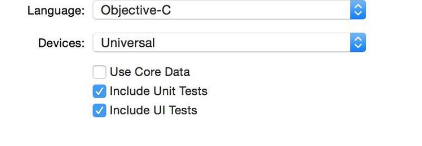
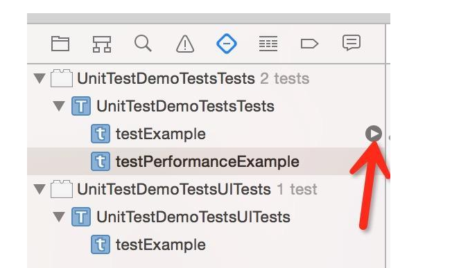
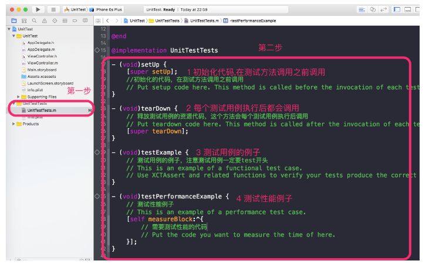
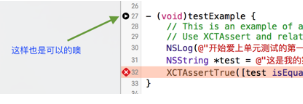
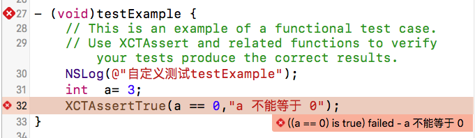
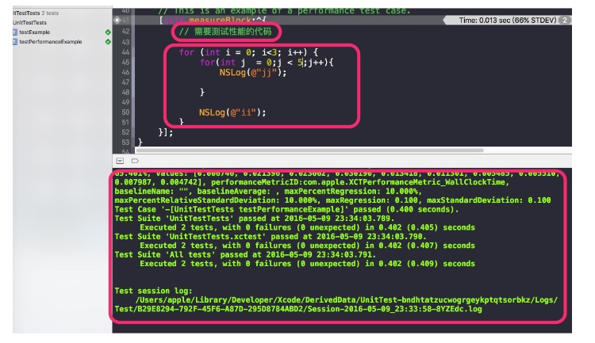

XCTest单元测试
1.基础知识
什么是单元测试:
单元测试是开发者编写的一小段代码，用于检验被测代码中的一个很明确的功能是否正确。通常而言，一个单元测试是用于判断某个特定条件（或者场景）下某个特定函数的行为。
单元测试在程序里面可以理解一个模块一个方法，在每个可能存在的模块都进行测试，确保每个模块都没有问题，从而提高整体程序的质量。
XCTest使用方法
测试用例被分到继承
XCTestCase的不同子类中去。
每个以 test 为开头的方法都是一个测试用例。
自定义类命名
我们可以用比如testThatIt将重点转移到期望的结果上的测试用例
test + 要测试的方法和类名，比如像 testHTTPRequest来测试一些特定类型的
我们还可以采用category 来将它们按主题分类Given / When / Then
根据Given-When-Then模式来组织我们的测试用例
这三部分分别指:Given:通过创建模型对象或将被测试的系统设置到指定的状态，来设定测试环境
When:包含了我们要测试的代码
Then:检查我们行为的结果，这里通常为一些断言可重用代码
整理所有有用的代码片段，并将它们加入到一个公共类中，为所有的测试用例服务,这个公共类非常实用。这个测试基础类能够运行自己的 -setUp 和 -tearDown 方法来配置环境。我们大部分情况用它来初始化测试用的 Core Data 栈，来重新设置我们的具有确定性的 NSUUID (这是那些可以让调试简单得多的一些东西中的一个)，并且设置一些后台的魔法来简化异步测试。Mock
我们使用的Mock框架是OCMock，mock 是一个在方法调用时返回标准答案的对象
XCTest使用范畴
Apple在Xcode 6中新增了UnitTest
XCTest测试范畴：
基本逻辑测试处理测试
异步加载数据测试
数据mock测试
XCTest常用基本测试工具
XCTest常用的一些判断工具都是以XCT开头的
补充:代码覆盖率：代码覆盖率 ＝ 实际执行的代码行数 / 整个工程总代码行数，直白来讲就是这样一个数值； Xcode7以后Apple推出了更为人性化的工具来统计代码覆盖率，使用简介传送门
用XCTest完成的最简单的测试Demo
创建项目时勾选

进入项目

进入到这个类，
setUp是每个测试方法调用前执行，tearDown是每个测试方法调用后执行。testExample是测试方法，和我们新建的没有差别。不过测试方法必须testXXX的格式，且不能有参数，不然不会识别为测试方法。测试方法的执行顺序是字典序排序。
测试用例
点击上图箭头的开始图标即可测试这个文件中测试方法
在测试方法前也有开始图标,点击即可测试这个方法
按快捷键Command + U进行单元测试，这个快捷键是全部测试

这里我们断言a=0是错误的所以没有通过XCTest常见的断言
XCTFail(format…) 生成一个失败的测试； XCTAssertNil(a1, format...)为空判断，a1为空时通过，反之不通过； XCTAssertNotNil(a1, format…)不为空判断，a1不为空时通过，反之不通过； XCTAssert(expression, format...)当expression求值为TRUE时通过； XCTAssertTrue(expression, format...)当expression求值为TRUE时通过； XCTAssertFalse(expression, format...)当expression求值为False时通过； XCTAssertEqualObjects(a1, a2, format...)判断相等，[a1 isEqual:a2]值为TRUE时通过，其中一个不为空时，不通过； XCTAssertNotEqualObjects(a1, a2, format...)判断不等，[a1 isEqual:a2]值为False时通过； XCTAssertEqual(a1, a2, format...)判断相等（当a1和a2是 C语言标量、结构体或联合体时使用,实际测试发现NSString也可以）； XCTAssertNotEqual(a1, a2, format...)判断不等（当a1和a2是 C语言标量、结构体或联合体时使用）； XCTAssertEqualWithAccuracy(a1, a2, accuracy, format...)判断相等，（double或float类型）提供一个误差范围，当在误差范围（+/-accuracy）以内相等时通过测试； XCTAssertNotEqualWithAccuracy(a1, a2, accuracy, format...) 判断不等，（double或float类型）提供一个误差范围，当在误差范围以内不等时通过测试； XCTAssertThrows(expression, format...)异常测试，当expression发生异常时通过；反之不通过；（很变态） XCTAssertThrowsSpecific(expression, specificException, format...) 异常测试，当expression发生specificException异常时通过；反之发生其他异常或不发生异常均不通过； XCTAssertThrowsSpecificNamed(expression, specificException, exception_name, format...)异常测试，当expression发生具体异常、具体异常名称的异常时通过测试，反之不通过； XCTAssertNoThrow(expression, format…)异常测试，当expression没有发生异常时通过测试； XCTAssertNoThrowSpecific(expression, specificException, format...)异常测试，当expression没有发生具体异常、具体异常名称的异常时通过测试，反之不通过； XCTAssertNoThrowSpecificNamed(expression, specificException, exception_name, format...)异常测试，当expression没有发生具体异常、具体异常名称的异常时通过测试，反之不通过注意: 特别注意下XCTAssertEqualObjects和XCTAssertEqual。
XCTAssertEqualObjects(a1, a2, format...)的判断条件是[a1 isEqual:a2]是否返回一个YES。XCTAssertEqual(a1, a2, format...)的判断条件是a1 == a2是否返回一个YES。对于后者，如果a1和a2都是基本数据类型变量，那么只有a1 == a2才会返回YES
XCAssertEqual(a1, a2, format...)当a1和a2是 C语言标量、结构体或联合体时使用,实际测试发现NSString也可以性能测试用例的实现

1. XCTest异步测试
XCTestExpression类带入了异步测试,我们可以可以等待指定长度的时间，一直到某些条件符合的时候在开始测试。而不用再写很多的GCD代码控制
我们可以定义这样的宏
#define WAIT do {\
[self expectationForNotification:@"RSBaseTest" object:nil handler:nil];\
[self waitForExpectationsWithTimeout:30 handler:nil];\
} while (0);
#define NOTIFY \
[[NSNotificationCenter defaultCenter]postNotificationName:@"RSBaseTest" object:nil];
异步网络测试用例
-(void)testRequest{
// 1.获得请求管理者
AFHTTPRequestOperationManager *mgr = [AFHTTPRequestOperationManager manager];
mgr.responseSerializer.acceptableContentTypes = [NSSet setWithObjects:@"text/html",nil];
// 2.发送GET请求
[mgr GET:@"http://www.weather.com.cn/adat/sk/101110101.html" parameters:nil success:^(AFHTTPRequestOperation *operation, id responseObject) {
NSLog(@"responseObject:%@",responseObject);
XCTAssertNotNil(responseObject, @"返回出错");
self.stAlertView = [[STAlertView alloc]initWithTitle:@"验证码" message:nil textFieldHint:@"请输入手机验证码" textFieldValue:nil cancelButtonTitle:@"取消" otherButtonTitle:@"确定" cancelButtonBlock:^{
//点击取消返回后执行
[self testAlertViewCancel];
NOTIFY //继续执行
} otherButtonBlock:^(NSString *b) {
//点击确定后执行
[self alertViewComfirm:b];
NOTIFY //继续执行
}];
[self.stAlertView show];
} failure:^(AFHTTPRequestOperation *operation, NSError *error) {
NSLog(@"error:%@",error);
XCTAssertNil(error, @"请求出错");
NOTIFY //继续执行
}];
WAIT //暂停
}
Copyright © 2015 Powered by MWeb, Theme used GitHub CSS.